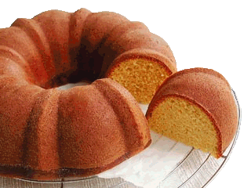

Bolo de Fubá
Ingredientes
- 3 ovos inteiros.
- 2 xícaras (chá) de açúcar.
- 2 xícaras (chá) de fubá
- 3 colheres (sopa) de farinha de trigo.
- 1/2 copo (americano) de óleo.
- 1 copo (americano) de leite.
- 1 colher (sopa) de fermento em pó
Modo de Preparo
- Em um liquidificador, adicione os ovos, o açúcar, o fubá, a farinha de trigo, o óleo, o leite e o fermento, depois bata até a massa ficar lisa e homogênea
- Despeje a massa em uma forma untada e polvilhada
- Leve para assar em forno médio 180 °C) preaquecido por 40 minutos